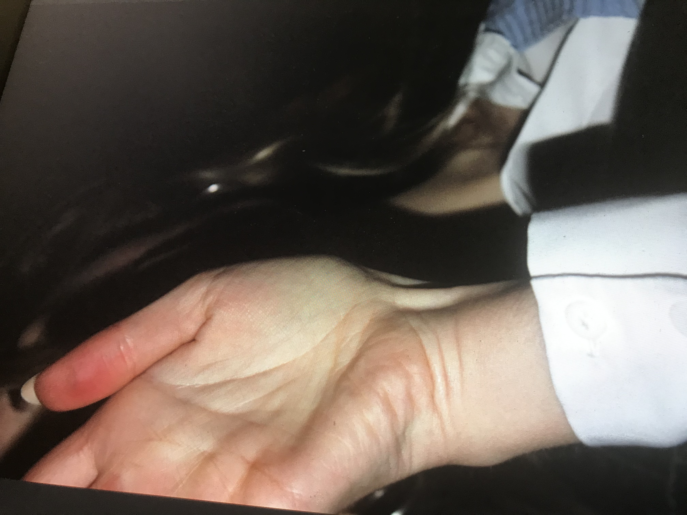
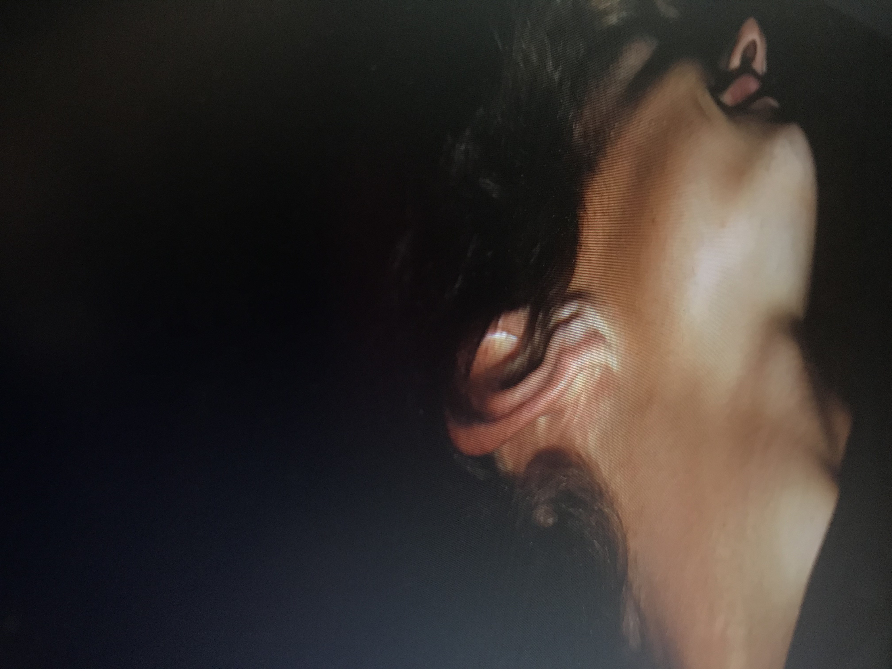
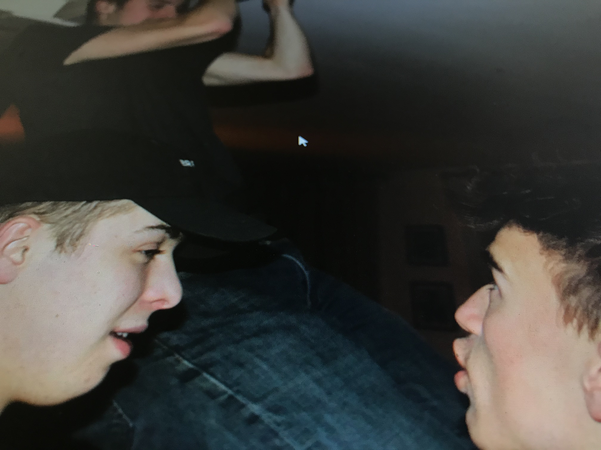
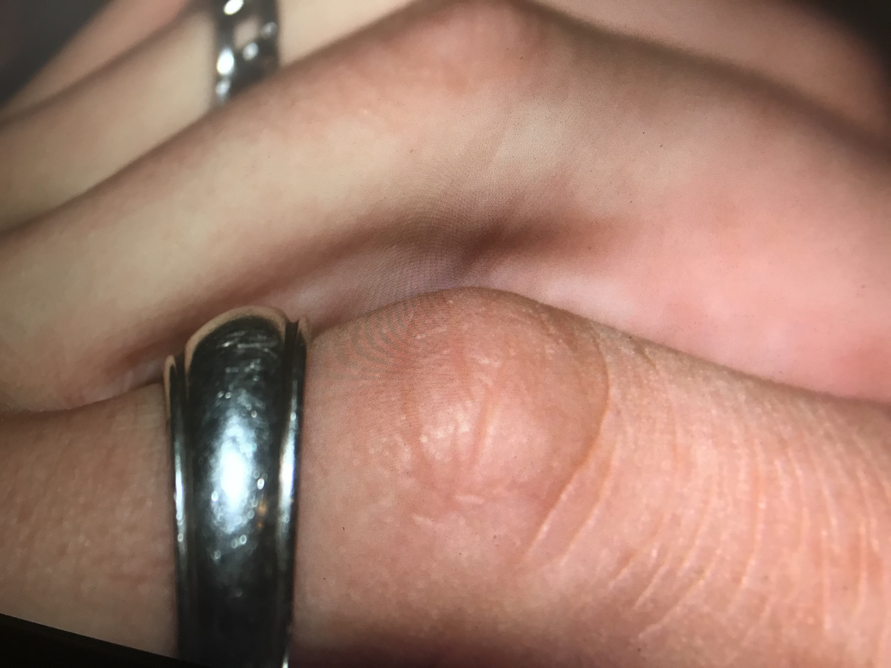
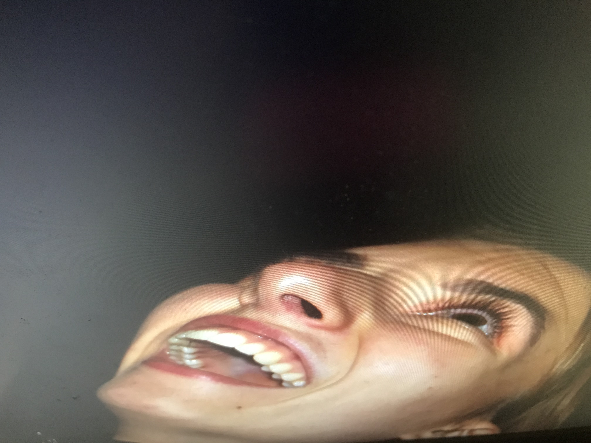
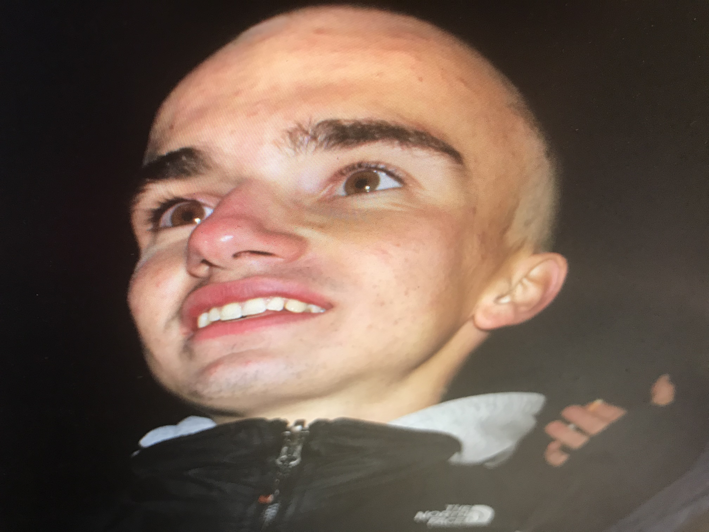
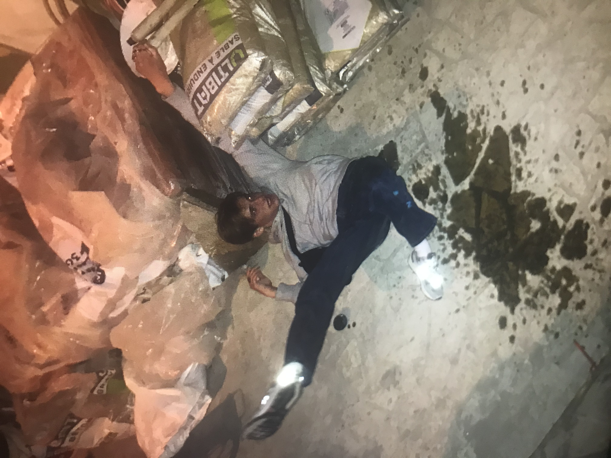
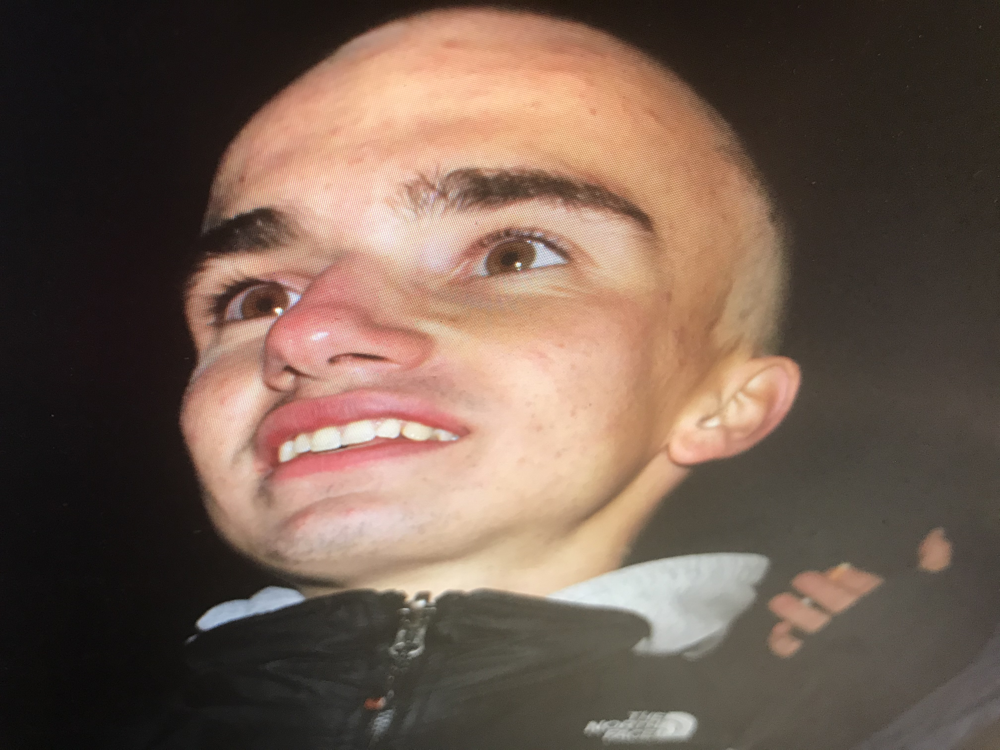
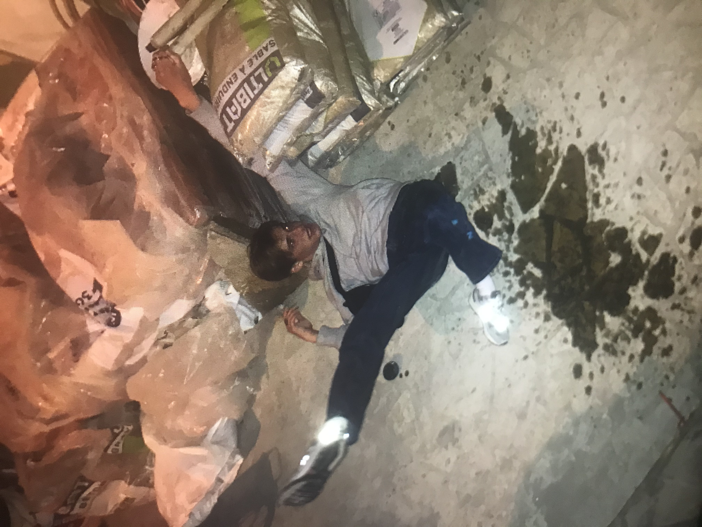

Essais photographiques où le sujet se trouve séjà sur une photo à travers un écran, l'objectif est incliné par rapport à cet écran ce qui va étirer, déformer les membres du corps, modifiant les perscpectives ainsi que les expressions des visages.
     


